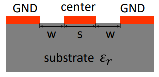
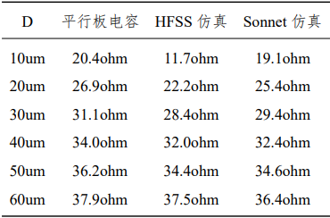

1. 传输线的特征阻抗¶
特征阻抗 \(Z_0=\sqrt{L_0/C_0}\) ，单位长度的电感和电容分别为
\[ L_0=(60 \pi)^2 \epsilon_0 \frac{K(\sqrt{1-k^2})}{K(k)} \tag{1.1} \]\[ C_0=2 \epsilon_0 (\epsilon^{sub}_r+1) \frac{K(k)}{K(\sqrt{1-k^2})} \tag{1.2} \]
（K 是第一类椭圆积分，\(k=\frac{s}{s+2w}\)，s 是中心导体的宽度，w 是导体距地面距离、沟宽。）
考虑air-bridge作用，bridge 与 CPW 中心导体形成平行板电容，额外的电容 \(C_b= \frac{\epsilon _0 \epsilon^{insu}_rS}{dD}\) 会引入到特征阻抗的计算当中，修正结果
\[ Z_0= \sqrt{L_0/(C_0+C_b)} \tag{1.3} \]（S 是平行板电容的面积，d 是 bridge 和 CPW 之间绝缘层的厚度，\(\epsilon^{insu}_r\) 是绝缘层的相对介电常数，长度为 D 的 CPW 上有一个 bridge。）
e.g. 计算Z0
蓝宝石er=10，s=10，w=5；硅er=11.9，s=10，w=6。 阻抗模拟分别为52.9165，48.8644 ohm。
bridge 的宽度 W=2um，CPW 的 w 为 5um，s 为10um，绝缘层的材质为高阻硅厚度为 250nm，衬底为蓝宝石。

import scipy.special,numpy
# 传输线特征阻抗
def fun_z0(epsub,s0,w0):
s=s0*um # um
w=w0*um
k=s/(s+2*w)
l0=(60*PI)**2*EP0*scipy.special.ellipk(numpy.sqrt(1-k**2))/scipy.special.ellipk(k) #第一类椭圆积分K(k)
c0=2*EP0*(epsub+1)*scipy.special.ellipk(k)/scipy.special.ellipk(numpy.sqrt(1-k**2))
z0=numpy.sqrt(l0/c0)
return z0
# 传输线特征阻抗，带空气桥
def fun_z0_bridge(epsub,s0,w0,epinsu,ww0,d0,dd0):
s=s0*um # um
w=w0*um
k=s/(s+2*w)
ww=ww0*um
d=d0*nm # nm
dd=dd0*um
ss=ww*s
l0=(60*PI)**2*EP0*scipy.special.ellipk(numpy.sqrt(1-k**2))/scipy.special.ellipk(k) #第一类椭圆积分K(k)
c0=2*EP0*(epsub+1)*scipy.special.ellipk(k)/scipy.special.ellipk(numpy.sqrt(1-k**2))
cb=EP0*epinsu*ss/d/dd
z0=numpy.sqrt(l0/(c0+cb))
# print("c0, cb: ", c0, cb)
return z0
print("sapphire-z0: \nref 53, cal", fun_z0(10,10,5))
print("\nsi-z0: \nref 49, cal", fun_z0(11.9,10,6))
print("\nadd bridge: ")
for dd in range(10,70,10):
print(dd, fun_z0_bridge(10,10,5,11.9,2,250,dd))
sapphire-z0:
ref 53, cal 52.91650051773072
si-z0:
ref 49, cal 51.792959278048315
add bridge:
10 20.446616684631522
20 26.97240630563695
30 31.077371770720976
40 33.98458978498537
50 36.17650801920224
60 37.89767780549763